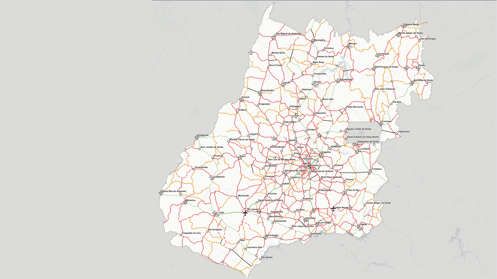
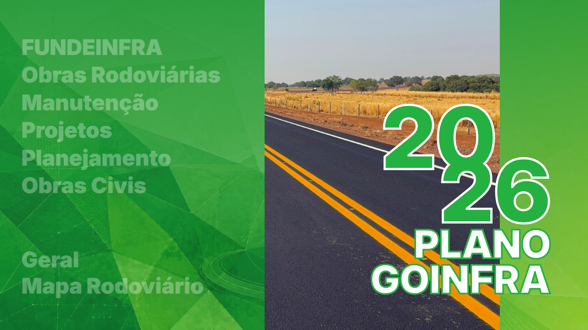
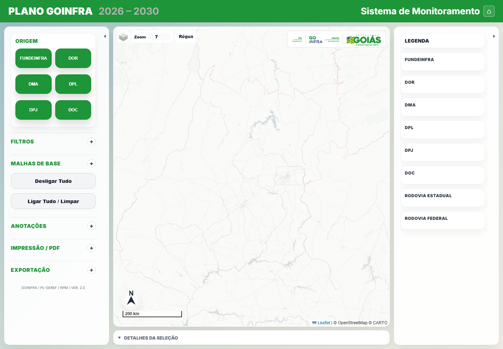

Manual do Usuário Final
Plano
GOINFRA
Guia técnico de acesso, pesquisa, filtros, consulta, anotações, medição, exportação e impressão do mapa interativo.
Índice
Acesso ao Sistema
O sistema é acessado pelo endereço publicado abaixo. A página inicial apresenta atalhos por categoria e abre o mapa com filtros iniciais já aplicados.
https://ricardomarques2025.github.io/pop2/

Atalhos principais
Interface do Mapa
A tela do mapa é dividida em barra superior, painel esquerdo, área central do mapa, painel direito de legenda e painel inferior de detalhes.

Controles de tela
- Use as setas laterais para recolher ou abrir os painéis.
- Clique no cabeçalho "Detalhes da seleção" para abrir ou fechar o painel inferior.
- Arraste a borda superior do painel inferior para ajustar a altura.
- Use o botão Home para retornar à página inicial.
Pesquisa e Filtros
O painel esquerdo é o centro de pesquisa do sistema. Os filtros são encadeados: quando um filtro é aplicado, os demais tendem a mostrar apenas opções compatíveis com a seleção atual.
Fluxo recomendado de pesquisa
- Escolha a Origem da informação: FUNDEINFRA, DOR, DMA, DPL, DPJ ou DOC.
- Abra o grupo Filtros.
- Selecione um Serviço, se quiser restringir por tipo de intervenção.
- Use Proposta FUNDEINFRA quando a consulta for por proposta.
- Use Rodovia e depois SRE para refinar por trecho rodoviário.
- Use Município ou Região de Planejamento para recorte espacial.
- Clique na obra exibida no mapa para abrir o popup e atualizar o painel inferior.
| Filtro | Finalidade | Observação técnica |
|---|---|---|
| Origem | Liga ou desliga grupos de obras. | Controla também legenda, exportação, rotulagem e impressão. |
| Serviço | Filtra pelo tipo de obra ou intervenção. | A lista depende das origens ativas. |
| Proposta FUNDEINFRA | Localiza obras por proposta. | Ao selecionar, o mapa aproxima automaticamente o trecho relacionado. |
| Rodovia | Filtra pela sigla da rodovia. | Serve também como base para localizar km. |
| SRE | Refina por segmento rodoviário. | Depende da rodovia e dos filtros já aplicados. |
| Localidade | Busca por nome de localidade. | Digite parte do nome e selecione uma sugestão. |
| Município | Recorte por município. | Destaca o município e aplica máscara no entorno. |
| Região de Planejamento | Recorte regional. | Municípios da região ficam destacados em conjunto. |
Tipos de Filtros
Os filtros podem ser entendidos em quatro grupos: temáticos, tabulares, espaciais e de apoio cartográfico.
Botões globais
- Desligar Tudo: remove temporariamente obras e camadas para iniciar uma nova leitura do mapa.
- Ligar Tudo / Limpar: limpa filtros, religa as origens e retorna ao comportamento padrão.
Consulta de Obras e Detalhes
As obras e elementos do mapa respondem ao clique. A consulta abre um popup no mapa e atualiza o painel inferior com informações detalhadas.
Como consultar
- Aplique os filtros desejados.
- Clique em uma linha, ponto, ícone de obra, aeródromo ou aeroporto.
- Leia o resumo no popup.
- Abra o painel Detalhes da seleção para ver a tabela completa.
| Elemento clicado | Resultado esperado |
|---|---|
| Obra linear | Popup e tabela com dados da origem ativa, proposta/item, serviço, etapa e extensão. |
| Obra pontual | Popup do primeiro registro e painel inferior com todos os itens vinculados ao ponto. |
| Aeródromo/aeroporto | Informações do equipamento e, quando houver, obras vinculadas por origem. |
| Marcador agrupado | Representa múltiplos pontos próximos; aproxime o zoom ou clique para detalhar. |
Malhas, Base Cartográfica e Legenda
As malhas de base são camadas auxiliares para interpretar a posição das obras. Elas podem ser ligadas ou desligadas sem alterar os dados das obras.

| Camada | Uso |
|---|---|
| Municípios | Apoio territorial e destaque em consultas espaciais. |
| Malha Estadual | Leitura da rede estadual e segmentos SRE. |
| Malha Federal | Referência da rede federal. |
| Localidades | Identificação de localidades e apoio ao zoom. |
| Aeródromos | Exibe aeródromos/aeroportos e obras vinculadas quando existentes. |
| Áreas urbanas | Complemento de leitura urbana. |
Legenda dinâmica
A legenda à direita muda conforme as camadas visíveis. Se uma origem ou malha estiver desligada, seus itens podem desaparecer da legenda.
Anotações Técnicas
As ferramentas de anotação permitem produzir marcações temporárias ou persistentes sobre o mapa, úteis para análise, reunião técnica, conferência de trecho e preparação de impressão.
| Ferramenta | Aplicação prática |
|---|---|
| Linha | Traçar eixo, alternativa, conexão ou observação linear. |
| Polígono | Delimitar área de interesse, perímetro urbano ou área de estudo. |
| Retângulo / Círculo | Destacar uma região rapidamente. |
| Ponto | Marcar local específico com formato e cor configuráveis. |
| Texto | Inserir observações diretamente no mapa. |
| Legenda das anotações | Mostra os itens desenhados em bloco próprio na legenda. |
Estilo das anotações
- Defina cor, espessura e opacidade antes ou durante o uso das ferramentas.
- Para pontos, escolha formato e tamanho.
- Para textos, ajuste cor e tamanho da fonte.
- As anotações ficam salvas no navegador e podem ser exportadas/importadas em GeoJSON.
Medição de Linhas, Áreas e Formas
O sistema possui duas formas de medição: a régua rápida do mapa e a medição integrada às anotações.
Régua rápida do mapa
- Clique no controle Régua sobre o mapa.
- Clique no ponto inicial.
- Mova o mouse para visualizar a distância em prévia.
- Clique no ponto final para concluir a medição.
Medição por anotação
- Abra Anotações.
- Escolha uma forma, por exemplo Linha ou Polígono.
- Clique em Medição.
- Desenhe a linha ou área no mapa.
- A linha passa a exibir medidas por segmento; no polígono, o sistema também calcula área.
| Objeto | Informação exibida |
|---|---|
| Linha com medição | Distâncias nos segmentos desenhados. |
| Polígono com medição | Distâncias dos lados e área aproximada. |
| Retângulo/círculo em modo medição | Dimensões aproximadas conforme a forma. |
Localizar km em Rodovia
A ferramenta Localizar km da rodovia interpola um ponto sobre a geometria da malha estadual a partir da rodovia selecionada e do quilômetro informado.
- Selecione uma Rodovia no filtro.
- Digite o km desejado no campo da seção Anotações.
- Clique em Marcar km.
- O sistema cria um marcador com rodovia, km, latitude e longitude.
Exportação de Dados
A exportação gera um CSV com os dados compatíveis com os filtros ativos no momento.
- Aplique os filtros necessários.
- Abra o grupo Exportação.
- Clique em Exportar tabela filtrada.
- Abra o arquivo CSV em Excel, LibreOffice ou outro editor tabular.
O que pode sair no CSV
- Obras lineares visíveis.
- Obras pontuais visíveis.
- Obras vinculadas a aeródromos/aeroportos.
- Origem, tipo, proposta/item, serviço, etapa, rodovia, município e extensão quando disponíveis.
Impressão e PDF do Mapa
A seção Impressão / PDF prepara o mapa atual para saída em PDF pelo navegador.
| Campo | Uso recomendado |
|---|---|
| Formato | A4 para consultas rápidas; A3 a A0 para mapas técnicos maiores. |
| Orientação | Paisagem para trechos horizontais; retrato para recortes verticais. |
| Margem | Ajusta a borda do mapa no papel. |
| Enquadramento | "Ajustar tela" usa a visão atual; escala personalizada usa denominador informado. |
| Título do mapa | Permite inserir título específico para reunião, relatório ou proposta. |
| Rótulos e localidades | Controla densidade de rótulos no mapa impresso. |
| Rótulos das obras | Ativa identificação das obras no produto impresso. |
Gerar PDF
- Organize filtros, zoom, mapa base e camadas.
- Escolha formato, orientação e margem.
- Defina o título se necessário.
- Clique em Salvar mapa em PDF.
- No navegador, selecione Salvar como PDF.
Boas Práticas e Solução de Problemas
Boas práticas de uso
- Use poucos filtros por vez para entender o comportamento da seleção.
- Depois de consultar uma origem específica, use Ligar Tudo / Limpar antes de iniciar outra análise.
- Para conferência técnica, clique na obra e leia o painel inferior, não apenas o popup.
- Antes de imprimir, confira legenda, camadas visíveis e rótulos.
- Exporte anotações em GeoJSON quando precisar levar marcações para outro computador.
| Situação | Ação recomendada |
|---|---|
| Mapa não carregou. | Verifique a conexão com a internet e recarregue a página. |
| Filtro parece sem opções. | Limpe filtros anteriores ou religue as origens. |
| Obra esperada não aparece. | Confira origem, serviço, município/região, rodovia e SRE ativos. |
| PDF saiu com enquadramento ruim. | Ajuste o zoom na tela e gere novamente usando "Ajustar tela". |
| Anotação sumiu em outro navegador. | Importe o GeoJSON exportado anteriormente. |